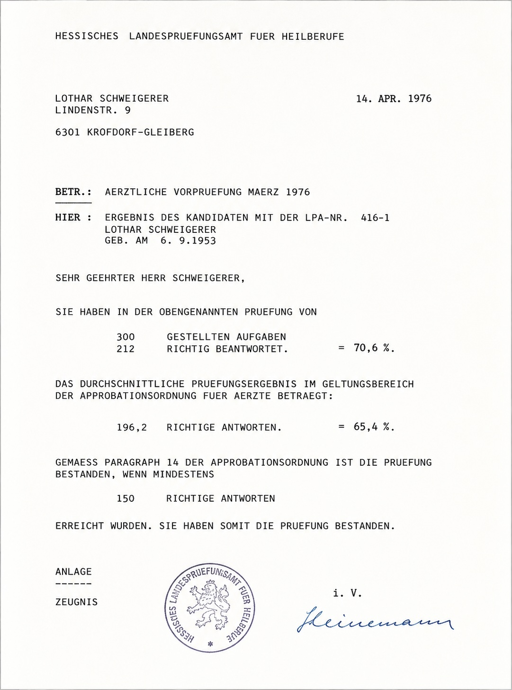

Frühjahr 1976
Als ich mit dem Medizinstudium begonnen hatte, hatte ich ein geringes Selbstvertrauen. Die meisten meiner Kommilitonen waren Einserkandidaten. Musterschüler. Leute, die nie sitzen geblieben waren und von denen ich dachte, sie seien allesamt kleine Genies. Und mittendrin ich. Sitzenbleiber. Vier Fünfen und eine Sechs. Nicht gerade die ideale Ausgangslage für ein gesundes Selbstvertrauen.
Ich hatte Angst zu versagen. Die Schule hatte schließlich gezeigt, wie schnell man abgestempelt werden konnte. Also beschloss ich, vor dem Physikum noch ein zusätzliches Semester einzulegen. Wenn ich schon nicht der Klügste war, dann wollte ich wenigstens der Fleißigste sein.
Mittlerweile wohnte ich mit Luigi und Uwe in einer WG in Krofdorf-Gleiberg. Die Wohnung hatte vorher Manni mit einigen Freunden bewohnt. Dort waren wilde Zeiten abgelaufen. Darüber wird später noch zu berichten sein.
Ich hatte das größte Zimmer geerbt. Darin standen ein riesiges Bett von zwei mal zwei Metern, ein alter Schreibtisch und Möbel, die ihre besten Jahre längst hinter sich hatten. Bett und Schreibtisch hatte ich braun gestrichen. Das Bettzeug hatte ein orangefarbenes Pepita-Muster. Damals fand ich das schick.
Das Lernen hatte ich mir organisiert. Ganz einfach: sieben Prüfungsfächer und ein Lehrbuch pro Fach. Macht x Seitenzahlen. Dividiert durch die Tage bis zum Physikum ergab das mein tägliches Pensum an Seiten, die ich lernen musste. Es ging so: zwei Seiten lernen, fünf Minuten Powernap, anschließend die beiden Seiten laut wiederholen. Dann die nächsten zwei Seiten, und so weiter.
Ich habe grundsätzlich laut gelernt. Auge und Ohr zusammen funktionieren besser als das Auge allein. Ist meine Überzeugung.
Einmal war Luigis Mutter zu Besuch. Sie hörte mich aus meinem Zimmer reden und dachte zunächst, ich hätte Besuch. Als sie bemerkte, dass ich allein war und trotzdem ununterbrochen sprach, dachte sie: Mit dem Jungen stimmt doch was nicht! Und fragte Luigi abends voller Sorge, ob man mir helfen müsste. Bald hatten wir das Missverständnis aufgeklärt. Wir haben noch lange darüber gelacht.
Unterbrochen wurde das Lernen nur durch kreative Kochkunst: Spiegeleier machen. Uwe und ich verdrückten abenteuerliche Mengen davon, während im Fernsehen Skiabfahrten oder Skispringen liefen. Oder durch Schallplattenhören. Mittlerweile besaß ich etwa zweihundert LPs. Musik war ebenso wichtig wie Anatomie, Biochemie oder Physiologie.
Kaffee war mein Motor. Morgens eine Kanne. Nachmittags noch eine. Für mich allein. Abends merkte ich es. Manchmal sah ich Dinge, die es nicht gab. Und dann musste ich ja auch noch schlafen. Von Aldi hatten wir Pennerbomben gebunkert. Die mussten nun für den Schlaf sorgen. Um zwei Uhr nachts hatte ich meist Bettschwere erreicht. Und morgens um acht ging das gleiche Programm von vorne los.
Dann kam das Physikum. In der Stadthalle Gießen, etwa hundert Studenten. Nervös. So wie ich.
Während der Vorbereitung hatte ich mir eine Strategie angewöhnt, die ich bis heute beibehalten habe. Zuerst die einfachen Aufgaben. Erfolg schafft Selbstvertrauen. Selbstvertrauen schafft Ruhe. Und Ruhe hilft bei den schwierigen Problemen. So arbeitete ich mich durch den Fragenkatalog. Während der Prüfung fühlte ich, dass es reichen könnte. Mit siebzig Prozent richtig beantworteter Fragen war ich „dabei“. Sogar in Physik und Chemie. Fächern, mit denen ich in der Schule nichts anfangen konnte.
Das war im Frühjahr 1976.

Das Ergebnis meiner Ärztlichen Vorprüfung vom April 1976: 212 von 300 Fragen richtig beantwortet. Damit war das Physikum bestanden.
Das Physikum war für mich mehr als nur eine bestandene Prüfung. Zum ersten Mal hatte ich das Gefühl, dass die Urteile aus meiner Schulzeit vielleicht doch nicht das letzte Wort waren. Die vermeintlichen Genies waren ganz normale Menschen. Und ich war offenbar nicht der hoffnungslose Fall, für den mich manche gehalten hatten.
Zum ersten Mal begann ich zu glauben, dass ich meinen eigenen Weg vielleicht doch gehen könnte.